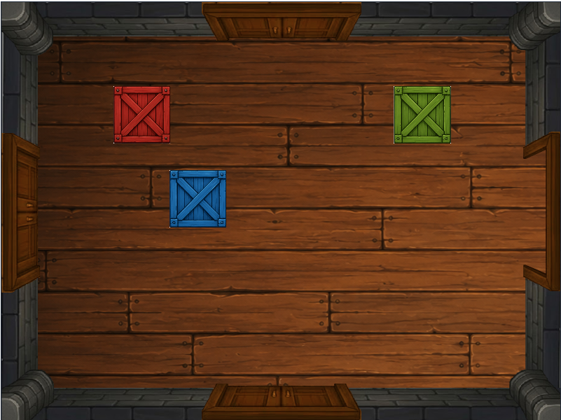
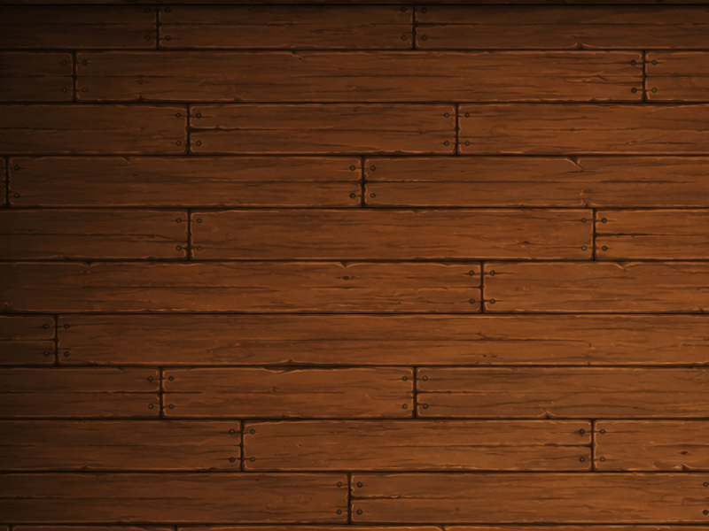
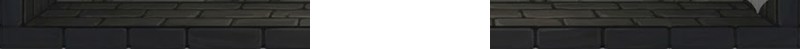
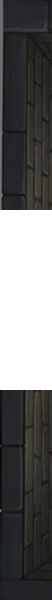
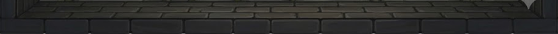
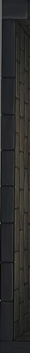
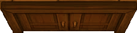
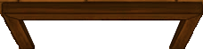

Example room: WorkshopTutorial - Atrium
This guide explains how room art pieces/images are used to create the final room image,
which sizes are fixed, where flexibility is allowed, and how the runtime assembles
final room visuals.
The goal is to provide a clear understanding of how room images are used in the game engine and
what is expected from the artist when creating room image assets.
The game engine combines separate art pieces into one finished room image.
Images are provided as parts and the game engine places and layers them into a final room image.
The following final room image shows the room itself as well as 3 colored crates in the room.
The crates are not part of the room art; they are just for visual reference.

The goal of providing separate pieces is to allow mix and match for different room layouts. Mix and match can allow for different door placements and different wall/floor themes without having to create a whole new room image for each variant. In addition to door layout flexibility mix and match can also provide the option to mix themes. Such as having several variants of a floor image and mixing these with the same walls to create variation without having to create a whole new room image for each variant.
In the Atrium, all four walls use wall images that have a transparent opening in the center. That opening is intentional. The door object image is placed into that transparent space. This allows for "the floor" to be visible behind the door when the door is open.
Solid wall versions with no transparent center cutout are also useful for rooms that do not have a door on that wall.
The following files are included in this package for an example reference






